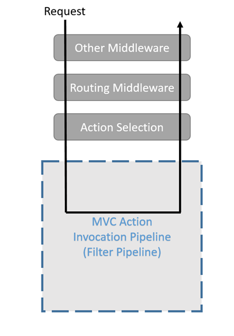
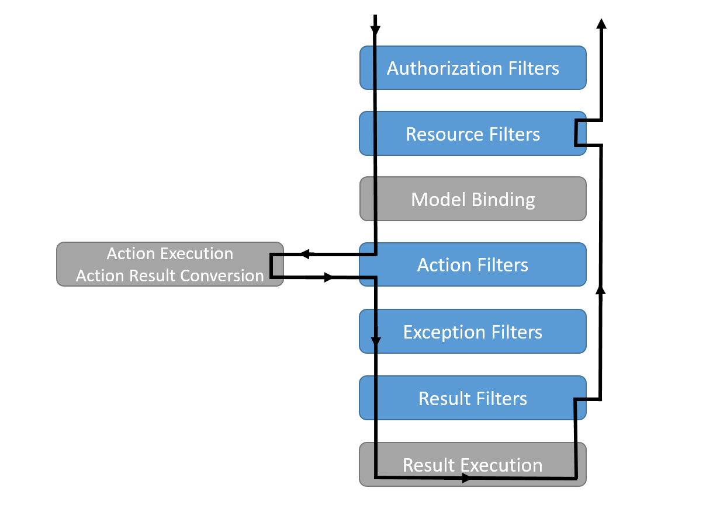

Language Built-in Feature Preview
Table of Contents
- C/C++ STD Notes
- Qt Notes
- C# Notes
- Get a Random Set of String
StringWritervsStringBuilder- Deferred Execution vs Immediate Execution
IEnumerable,ICollection,IListandList- Add Configuration to Console Application
- Add Font & Wrine On a Picture
- Load Font From a File
- Check If an Object is Number
- Check If a Char is Digit
- Merge Two Images
- Add Image To Pdf
- Init-Only Property
- Records
- Unique Identifier Example
- RestSharp Notes
- Deserialize
datafrom a RESTful Response - Round Float
- Create a new array with a thousand true values:
- Reverse String
- ASP.NET Notes
- Entity Framework
- Regex
C/C++ STD Notes
Sorting
Sorting Custom Objects
You can sort array of custom objects using the std::sort like this:
struct MyStruct { int key; std::string stringValue; MyStruct(int k, const std::string& s) : key(k), stringValue(s) {} }; struct less_than_key { inline bool operator() (const MyStruct& struct1, const MyStruct& struct2) { return (struct1.key < struct2.key); } }; std::vector < MyStruct > vec; vec.push_back(MyStruct(4, "test")); vec.push_back(MyStruct(3, "a")); vec.push_back(MyStruct(2, "is")); vec.push_back(MyStruct(1, "this")); std::sort(vec.begin(), vec.end(), less_than_key());
Also, since C++14 you can write an embedded functions inside the sort function:
#include <vector> #include <algorithm> using namespace std; vector< MyStruct > values; sort( values.begin( ), values.end( ), [ ]( const auto& lhs, const auto& rhs ) { return lhs.key < rhs.key; });
Sorting Descending
sort(begin, end, greater<int>());
When to return 1 in compare function
-1 = means point 1 should come before point 2 +1 = means point 2 should come before point 1 0 = means they r equal
Numbers
Check If Prime Number
bool isPrimeNumber(int n) { if (n <= 1) return false; if (n <= 3) return true; if (n%2 == 0 || n%3 == 0) return false; for (int i=5; i*i<=n; i=i+6) if (n%i == 0 || n%(i+2) == 0) return false; return true; }
Greater Common Divisor
#include <iostream> #include <algorithm> using namespace std; int main() { cout << __gcd(6, 20) << endl; }
2
for_each
https://en.cppreference.com/w/cpp/algorithm/for_each
#include <vector> #include <algorithm> #include <iostream> struct Sum { void operator()(int n) { sum += n; } int sum{0}; }; int main() { std::vector<int> nums{3, 4, 2, 8, 15, 267}; auto print = [](const int& n) { std::cout << " " << n; }; std::cout << "before:"; std::for_each(nums.cbegin(), nums.cend(), print); std::cout << '\n'; std::for_each(nums.begin(), nums.end(), [](int &n){ n++; }); // calls Sum::operator() for each number Sum s = std::for_each(nums.begin(), nums.end(), Sum()); std::cout << "after: "; std::for_each(nums.cbegin(), nums.cend(), print); std::cout << '\n'; std::cout << "sum: " << s.sum << '\n'; }
Other
Get Intersections
#include <iostream> // std::cout #include <algorithm> // std::set_intersection, std::sort #include <vector> // std::vector int main () { int first[] = {5,10,15,20,25}; int second[] = {50,40,30,20,10}; std::vector<int> v(10); // 0 0 0 0 0 0 0 0 0 0 std::vector<int>::iterator it; std::sort (first,first+5); // 5 10 15 20 25 std::sort (second,second+5); // 10 20 30 40 50 it=std::set_intersection (first, first+5, second, second+5, v.begin()); // 10 20 0 0 0 0 0 0 0 0 v.resize(it-v.begin()); // 10 20 std::cout << "The intersection has " << (v.size()) << " elements:\n"; for (it=v.begin(); it!=v.end(); ++it) std::cout << ' ' << *it; std::cout << '\n'; return 0; }
| The | intersection | has | 2 | elements: |
| 10 | 20 |
Lambda
Basic syntax:
[ capture clause ] (parameters) -> return-type
{
definition of method
}
Basic example:
int main() { int arr[] = {1, 2, 3, 4, 5, 6, 7, 8, 9, 10}; int f = accumulate(arr, arr + 10, 1, [](int i, int j) { return i * j; }); cout << "Factorial of 10 is : " << f << endl; }
Capturing methods:
- [&] : capture all external variable by reference
- [=] : capture all external variable by value
- [a, &b] : capture a by value and b by reference
Explicitly specifying a return type using ~ -> T ~:
void func4(std::vector<double>& v) { std::transform(v.begin(), v.end(), v.begin(), [](double d) -> double { if (d < 0.0001) { return 0; } else { return d; } }); }
Strings
Get all substrings
void subString(string str, int n) { for (int len = 1; len <= n; len++) { for (int i = 0; i <= n - len; i++) { int j = i + len - 1; cout << str.substr(i, n - j); cout << endl; } } }
String/Char to int in C(++)
#include <sstream> #include <iostream> using namespace std; int main() { string s = "12345"; stringstream geek(s); int x = 0; geek >> x; cout << "Value of x : " << x; }
Value of x : 12345
Using stoi()
#include <iostream> #include <string> using namespace std; int main() { string str1 = "45"; string str2 = "3.14159"; string str3 = "31337 geek"; int myint1 = stoi(str1); int myint2 = stoi(str2); int myint3 = stoi(str3); cout << "stoi(\"" << str1 << "\") is " << myint1 << '\n'; cout << "stoi(\"" << str2 << "\") is " << myint2 << '\n'; cout << "stoi(\"" << str3 << "\") is " << myint3 << '\n'; return 0; }
Using atoi()
#include <cstdlib> #include <iostream> using namespace std; int main() { const char* str1 = "42"; const char* str2 = "3.14159"; const char* str3 = "31337 geek"; int num1 = atoi(str1); int num2 = atoi(str2); int num3 = atoi(str3); cout << "atoi(\"" << str1 << "\") is " << num1 << '\n'; cout << "atoi(\"" << str2 << "\") is " << num2 << '\n'; cout << "atoi(\"" << str3 << "\") is " << num3 << '\n'; return 0;
Which one to use?
I find std::atoi() a horrible function: It returns zero on error. If you consider zero as a valid input, then you cannot tell whether there was an error during the conversion or the input was zero. That's just bad.
If you don't care about correctness or you know for sure that you won't have zero as input or you consider that an error anyway, then, perhaps the C functions might be faster (probably due to the lack of exception handling). It depends on your compiler, your standard library implementation, your hardware, your input, etc. The best way is to measure it. However, I suspect that the difference, if any, is negligible.
Using char asci
char a = '4'; int ia = a - '0';
Multiplay all elements of vector with n
std::transform(myv1.begin(), myv1.end(), myv1.begin(), std::bind(std::multiplies<T>(), std::placeholders::_1, n));
Extract Vector
vector<T>::const_iterator first = myVec.begin() + 100000; vector<T>::const_iterator last = myVec.begin() + 101000; vector<T> newVec(first, last);
Check if all values are true
std::all_of(vec.begin(), vec.end(), [](bool v) { return v; });
Remove Spaces From String
#include <iostream> #include <string> using std::cout; using std::cin; using std::endl; using std::string; int main(){ string str = " Arbitrary str ing with lots of spaces to be removed ."; cout << str << endl; str.erase(std::remove(str.begin(), str.end(), ' '), str.end()); cout << str << endl; return EXIT_SUCCESS; }
Remove Every non alpha from string
s.erase(std::remove_if(s.begin(), s.end(), (int(*)(int))std::isalnum), s.end());
String To Upper
std::transform(str.begin(), str.end(),str.begin(), ::toupper);
Sum of vector
Qt Notes
Convert a Widget into a Central Widget
this->setCentralWidget(ui->whateverWidget);
C# Notes
Get a Random Set of String
public static string RandomString(int length)
{
var random = new Random();
const string chars = "ABCDEFGHIJKLMNOPQRSTUVWXYZ0123456789";
return new string(Enumerable.Repeat(chars, length)
.Select(s => s[random.Next(s.Length)]).ToArray());
}
StringWriter vs StringBuilder
StringWriter derives from TextWriter, which allows various classes to write text without
caring where it's going. In the case of StringWriter, the output is just into memory. You
would use this if you're calling an API which needs a TextWriter but you only want to build
up results in memory.
StringBuilder is essentially a buffer which allows you to perform multiple operations
(typically appends) to a "logical string" without creating a new string object each time.
You would use this to construct a string in multiple operations.
Deferred Execution vs Immediate Execution
The LINQ queries are executed in two different ways as follows.
- Deferred execution
- Immediate execution
Based on the above two types of execution, the LINQ operators are divided into 2 categories. They are as follows:
- Deferred or Lazy Operators: These query operators are used for deferred execution. For example –
select,SelectMany,where,Take,Skip, etc. are belongs to Deferred or Lazy Operators category. - Immediate or Greedy Operators: These query operators are used for immediate execution. For Example –
count,average,min,max,First,Last,ToArray,ToList, etc. are belongs to the Immediate or Greedy Operators category.
Deferred Execution
In this case, the LINQ Query is not executed at the point of its declaration. That means, when we write a LINQ query, it doesn’t execute by itself. It executes only when we access the query results. So, here the execution of the query is deferred until the query variable is iterated over using for each loop.
using System;
using System.Collections.Generic;
using System.Linq;
namespace LINQDemo
{
public class Employee
{
public int ID { get; set; }
public string Name { get; set; }
public int Salary { get; set; }
}
class Program
{
public static void Main()
{
List<Employee> listEmployees = new List<Employee>
{
new Employee { ID= 1001, Name = "Priyanka", Salary = 80000 },
new Employee { ID= 1002, Name = "Anurag", Salary = 90000 },
new Employee { ID= 1003, Name = "Preety", Salary = 80000 }
};
// In the below statement the LINQ Query is only defined and not executed
// If the query is executed here, then the result should not display Santosh
IEnumerable<Employee> result = from emp in listEmployees
where emp.Salary == 80000
select emp;
// Adding a new employee with Salary = 80000 to the collection listEmployees
listEmployees.Add(new Employee { ID = 1004, Name = "Santosh", Salary = 80000 });
// The LINQ query is actually executed when we iterate thru using a for each loop
// This is proved because Santosh is also included in the result
foreach (Employee emp in result)
{
Console.WriteLine($" {emp.ID} {emp.Name} {emp.Salary}");
}
Console.ReadKey();
}
}
}
We will get the following advantages
- It avoids unnecessary query execution which improves the performance of the application.
- The Query creation and the Query execution are decoupled which provide us the flexibility to create the query in several steps.
- A Linq deferred execution query is always re-evaluated when we re-enumerate. As a result, we always get the updated data.
In the case of Immediate Execution, the LINQ query is executed at the point of its declaration. So, it forces the query to execute and gets the result immediately. Let us see an example for a better understanding. The following example is self-explained. So, please go through the comment lines.
Immediate Execution
In the case of Immediate Execution, the LINQ query is executed at the point of its declaration. So, it forces the query to execute and gets the result immediately. Let us see an example for a better understanding. The following example is self-explained. So, please go through the comment lines.
using System;
using System.Collections.Generic;
using System.Linq;
namespace LINQDemo
{
public class Employee
{
public int ID { get; set; }
public string Name { get; set; }
public int Salary { get; set; }
}
class Program
{
public static void Main()
{
List<Employee> listEmployees = new List<Employee>
{
new Employee { ID= 1001, Name = "Priyanka", Salary = 80000 },
new Employee { ID= 1002, Name = "Anurag", Salary = 90000 },
new Employee { ID= 1003, Name = "Preety", Salary = 80000 }
};
// In the following statement, the LINQ Query is executed immediately as we are
// Using the ToList() method which is a greedy operator which forces the query
// to be executed immediately
IEnumerable<Employee> result = (from emp in listEmployees
where emp.Salary == 80000
select emp).ToList();
// Adding a new employee with Salary = 80000 to the collection listEmployees
// will not have any effect on the result as the query is already executed
listEmployees.Add(new Employee { ID = 1004, Name = "Santosh", Salary = 80000 });
// The above LINQ query is executed at the time of its creation.
// This is proved because Santosh is not included in the result
foreach (Employee emp in result)
{
Console.WriteLine($" {emp.ID} {emp.Name} {emp.Salary}");
}
Console.ReadKey();
}
}
}
Differences between IEnumerable and IQueryable
The IEnumerable and IQueryable are used to hold a collection of data and also used to
perform data manipulation operations such as filtering, Ordering, Grouping, etc.
Here in this demo, we will create a console application that will retrieve the data from the SQL Server database using Entity Framework database first approach. We are going to fetch the following Student information from the Student table.
Here is my scheme:
-- Create the required Student table CREATE TABLE Student ( ID INT PRIMARY KEY, FirstName VARCHAR(50), LastName VARCHAR(50), Gender VARCHAR(50) ) GO -- Insert the required test data INSERT INTO Student VALUES (101, 'Steve', 'Smith', 'Male') INSERT INTO Student VALUES (102, 'Sara', 'Pound', 'Female') INSERT INTO Student VALUES (103, 'Ben', 'Stokes', 'Male') INSERT INTO Student VALUES (104, 'Jos', 'Butler', 'Male') INSERT INTO Student VALUES (105, 'Pam', 'Semi', 'Female') GO
Let us modify the Program class as shown below.
using System;
using System.Collections.Generic;
using System.Linq;
namespace LINQDemo
{
class Program
{
static void Main(string[] args)
{
StudentDBContext dBContext = new StudentDBContext();
IEnumerable<Student> listStudents = dBContext.Students.Where(x => x.Gender == "Male");
listStudents = listStudents.Take(2);
foreach(var std in listStudents)
{
Console.WriteLine(std.FirstName + " " + std.LastName);
}
Console.ReadKey();
}
}
}
Here we create the LINQ Query using IEnumerable. Please use SQL Profiler to log the SQL
Script. Now run the application and you will see the following SQL Script is generated and
executed.
SELECT [Extent1].[ID] AS [ID], [Extent1].[FirstName] AS [FirstName], [Extent1].[LastName] AS [LastName], [Extent1].[Gender] AS [Gender] FROM [dbo].[Student] AS [Extent1] WHERE 'Male' = [Extent1].[Gender]
As shown in the above SQL Script, it will not use the TOP clause. So here it will fetch the data from SQL Server to in-memory and then it will filter the data.
Let's check it again using IQuerable:
using System;
using System.Linq;
namespace LINQDemo
{
class Program
{
static void Main(string[] args)
{
StudentDBContext dBContext = new StudentDBContext();
IQueryable<Student> listStudents = dBContext.Students
.AsQueryable()
.Where(x => x.Gender == "Male");
listStudents = listStudents.Take(2);
foreach(var std in listStudents)
{
Console.WriteLine(std.FirstName + " " + std.LastName);
}
Console.ReadKey();
}
}
}
Check the SQL Script:
SELECT TOP (2) [Extent1].[ID] AS [ID], [Extent1].[FirstName] AS [FirstName], [Extent1].[LastName] AS [LastName], [Extent1].[Gender] AS [Gender] FROM [dbo].[Student] AS [Extent1] WHERE 'Male' = [Extent1].[Gender]
As you can see it includes the TOP clause in the SQL Script and then fetches the data from the database.
Main differences:
IEnumerable |
IQuerable |
|---|---|
While querying the data from the database, the IEnumerable executes the “select statement” on the server-side (i.e. on the database), loads data into memory on the client-side, and then only applied the filters on the retrieved data. |
While querying the data from a database, the IQueryable executes the “select query” with the applied filter on the server-side i.e. on the database, and then retrieves data. |
So you need to use the IEnumerable when you need to query the data from in-memory collections like List, Array, and so on. |
So you need to use the IQueryable when you want to query the data from out-memory such as remote database, service, etc. |
The IEnumerable is mostly used for LINQ to Object and LINQ to XML queries. |
IQueryable is mostly used for LINQ to SQL and LINQ to Entities queries. |
The IEnumerable collection is of type forward only. That means it can only move in forward, it can’t move backward and between the items. |
The collection of type IQueryable can move only forward, it can’t move backward and between the items. |
IEnumerable supports deferred execution. |
IQueryable supports deferred execution. |
| It doesn’t support custom queries. | It also supports custom queries using CreateQuery and Executes methods. |
The IEnumerable doesn’t support lazy loading. Hence, it is not suitable for paging like scenarios. |
IQueryable supports lazy loading and hence it is suitable for paging like scenarios. |
IEnumerable, ICollection, IList and List
IEnumerable
First of all, it is important to understand, that there are two different interfaces defined
in the .NET base class library. There is a non-generic IEnumerable interface and there is a
generic type-safe IEnumerable<T> interface.
The IEnumerable interface is located in the System.Collections namespace and contains only a
single method definition. The interface definition looks like this:
public interface IEnumerable
{
IEnumerator GetEnumerator();
}
The GetEnumerator method must return an instance of an object of a class which implements
the IEnumerator interface.
It is important to know that the C# language foreach keyword works with all types that
implement the IEnumerable interface. Only in C# it also works with things that don’t
explicitly implement IEnumerable or IEnumerable<T>. I believe you have been using the
foreach keyword many times and without worrying about the reason why and how it worked with
that type.
IEnumerable<T>
Let’s now take a look at the definition of the generic and type-safe version called
IEnumerable<T> which is located in the System.Collections.Generic namespace:
public interface IEnumerable<out T> : IEnumerable
{
IEnumerator<T> GetEnumerator();
}
As you can see the IEnumerable<T> interface inherits from the IEnumerable interface.
Therefore a type which implements IEnumerable<T> has also to implement the members of
IEnumerable.
IEnumerable<T> defines a single method GetEnumerator which returns an instance of an object
that implements the IEnumerator<T> interface.
ICollection
As you can imagine, there are also two versions of ICollection which are
System.Collections.ICollection and the generic version
System.Collections.Generic.ICollection<T>.
public interface ICollection : IEnumerable
{
int Count { get; }
bool IsSynchronized { get; }
Object SyncRoot { get; }
void CopyTo(Array array, int index);
}
ICollection inherits from IEnumerable. You therefore have all members from the IEnumerable
interface implemented in all classes that implement the ICollection interface.
ICollection<T>
When we look at the generic version of ICollection, you’ll recognize that it does not look exactly the same as the non-generic equivalent:
public interface ICollection<T> : IEnumerable<T>, IEnumerable
{
int Count { get; }
bool IsReadOnly { get; }
void Add(T item);
void Clear();
bool Contains(T item);
void CopyTo(T[] array, int arrayIndex);
bool Remove(T item);
}
IList
The IList interface has of course a non-generic and a generic version. We start with looking
at the non-generic IList interface:
public interface IList : ICollection, IEnumerable
{
bool IsFixedSize { get; }
bool IsReadOnly { get; }
Object this[int index] { get; set; }
int Add(Object value);
void Clear();
bool Contains(Object value);
int IndexOf(Object value);
void Insert(int index, Object value);
void Remove(Object value);
void RemoveAt(int index);
}
Which to Use?
If you use a narrower interface type such as IEnumerable instead of IList, you protect your
code against breaking changes. If you use IEnumerable, the caller of your method can provide
any object which implements the IEnumerable interface. These are nearly all collection types
of the base class library and in addition many custom defined types. The caller code can be
changed in the future and your code won’t break that easily as it would if you had used
ICollection or even worse IList.
If you use a wider interface type such as IList, you are more in danger of breaking code changes. If someone wants to call your method with a custom defined object which only implements IEnumerable, it simply won’t work and will result in a compilation error.
The following table gives you an overview of how you can decide which type you should depend on.
Add Configuration to Console Application
Create a console application using dotnet command line or visual studio. Once the
application is created, add a reference to Microsoft.Extensions.Hosting nuget package. This
package will provide all the necessary stuff.
Add a json file, appsettings.json, to the console application project. Notice that we have
not made any code changes, so the file is not being read yet.
After adding the file, right click on appsettings.json and select properties. Then set “Copy
to Ouptut Directory” option to Copy Always.
private static IConfiguration _configuration;
static InitConfig()
{
// init configuration
var builder = new ConfigurationBuilder().AddJsonFile("settings.json", true, true);
_configuration = builder.Build();
}
Add Font & Wrine On a Picture
To draw multiple strings, call graphics.DrawString multiple times. You can specify the
location of the drawn string. This example we will draw two strings "Hello", "Word" ("Hello"
in blue color upfront "Word" in red color):
#+beginsrc csharp string firstText = "Hello"; string secondText = "World";
PointF firstLocation = new PointF(10f, 10f); PointF secondLocation = new PointF(10f, 50f);
string imageFilePath = @"path\picture.bmp" Bitmap bitmap = (Bitmap)Image.FromFile(imageFilePath);//load the image file
using(Graphics graphics = Graphics.FromImage(bitmap)) { using (Font arialFont = new Font("Arial", 10)) { graphics.DrawString(firstText, arialFont, Brushes.Blue, firstLocation); graphics.DrawString(secondText, arialFont, Brushes.Red, secondLocation); } } bitmap.Save(imageFilePath);//save the image file#+endsrc #+endsrc csharp
Load Font From a File
PrivateFontCollection collection = new PrivateFontCollection();
collection.AddFontFile(@"C:\Projects\MyProj\free3of9.ttf");
FontFamily fontFamily = new FontFamily("Free 3 of 9", collection);
Font font = new Font(fontFamily, height);
Check If an Object is Number
public static bool IsNumber(this object value)
{
return value is sbyte
|| value is byte
|| value is short
|| value is ushort
|| value is int
|| value is uint
|| value is long
|| value is ulong
|| value is float
|| value is double
|| value is decimal;
}
Check If a Char is Digit
using System;
public class IsDigitSample {
public static void Main() {
char ch = '8';
Console.WriteLine(Char.IsDigit(ch)); // Output: "True"
Console.WriteLine(Char.IsDigit("sample string", 7)); // Output: "False"
}
}
Merge Two Images
Image image1 = GetFirstImage();
Image image2 = GetSecondImage();
var bitmapImage = new Bitmap(Math.Max(image1.Width, image2.Width), (image1.Height + image2.Height));
using (Graphics g = Graphics.FromImage(bitmapImage))
{
g.DrawImage(image1, 0, 0);
g.DrawImage(image2, 0, image1.Height);
}
Add Image To Pdf
using System.IO;
using PdfSharp.Drawing;
using PdfSharp.Pdf;
public sealed class PdfHelper
{
private PdfHelper()
{
}
public static PdfHelper Instance { get; } = new PdfHelper();
public void SaveImageAsPdf(string imageFileName, PdfDocument x, int width = 1117)
{
System.Text.Encoding.RegisterProvider(System.Text.CodePagesEncodingProvider.Instance);
using (var document = x )
{
PdfPage page = document.AddPage();
using (XImage img = XImage.FromFile(imageFileName))
{
// Calculate new height to keep image ratio
var height = (int) (((double) width / (double) img.PixelWidth) * img.PixelHeight);
// Change PDF Page size to match image
page.Width = width;
page.Height = height;
XGraphics gfx = XGraphics.FromPdfPage(page);
gfx.DrawImage(img, 0, 0, width, height);
}
// document.Save("file.pdf");
}
}
}
Init-Only Property
The following code:
public class Member {
public int Id {
get;
init;
} // set is replaced with init
public string Name {
get;
set;
}
public string Address {
get;
set;
}
}
using System;
namespace C_9._0 {
class Program {
static void Main(string[] args) {
Member memberObj = new Member {
Id = 1
};
}
Is equive to:
public class Member
{
public Member(int memberId)
{
Id = memberId;
}
public int Id { get; }
public string Name { get; set; }
public string Address { get; set; }
}
using System;
namespace C_9._0 {
class Program {
static void Main(string[] args) {
Member memberObj = new Member(1);
}
In other words, the Id propery is immutable in both cases.
Records
Let's discuss the below code snippet:
public class Member
{
public int ID { get; init; }
public string FirstName { get; init; }
public string LastName { get; init; }
public string Address { get; init; }
}
Init properties are immutable properties which means member class properties cannot change. What will you do if you want to add a new property in the Member class (like the middle name) or change the value of the address property? The only way is you have to create new objects and then assign a new value, right?
Here I am going to create a new Membar class object and assign values to it.
var member = new Member
{
Id=1,
FirstName="Kirtesh",
LastName="Shah",
Address="Vadodara"
};
Assume that you want to change the address from "Vadodara "" to "Mumbai":
var new member = new Member
{
Id = member.Id,
FirstName = member.FirstName,
LastName = member.LastName,
Address = "Mumbai"
};
Now suppose we want to add new property, Middle Name, in Member class.
public class Member
{
public int ID { get; init; }
public string FirstName { get; init; }
public string MiddleName { get; init; }
public string LastName { get; init; }
public string Address { get; init; }
}
var member = new Member
{
Id=1,
FirstName="Kirtesh",
MiddleName = "D",
LastName="Shah",
Address = "Vadodara"
};
var newMember = new Member
{
Id = member.Id,
FirstName = member.FirstName,
MiddleName = member.MiddleName,
LastName = member.LastName,
Address = "Mumbai"
};
What you will do if you have hundreds of properties? It will become so difficult, right? Hence C# 9.0 introduced Record type to work with immutable data and solve the above issue.
public record Member
{
public int ID { get; init; }
public string FirstName { get; init; }
public string LastName { get; init; }
public string Address { get; init; }
}
What's the difference between the earlier Member class and the new Member record type? The only change is, we have replaced, Class, keyword with, Recor, . Now Member record type is treated as an immutable data value.
with
C# 9.0 introduces the 'With' expression with RecordType. It is mainly used to create new objects more effectively.
Before we understand the 'With' expression let's discuss the below code,
var member = new Member
{
Id=1,
FirstName="Kirtesh",
LastName="Shah",
Address = "Vadodara"
};
var newMember = member with { Address = "Mumbai" };
Another feature of the records, is that you can grap properties using the syntax sugar:
var (name, dateOfBirth) = x;
Unique Identifier Example
public class project
{
[Key]
[DatabaseGenerated(DatabaseGeneratedOption.Identity)]
public Guid id { get; set; }
[Required]
public string aliasName { get; set; }
[ForeignKey("Features")]
public virtual List<int> featureIds { get; set; }
}
public class feature
{
[Key]
[DatabaseGenerated(DatabaseGeneratedOption.Identity)]
public int id { get; set; }
[Required]
public string name { get; set; }
[DataType(DataType.MultilineText)]
public string description { get; set; }
}
public DbSet<project> Projects { get; set; }
public DbSet<feature> Features { get; set; }
RestSharp Notes
Before making a request using RestClient, you need to create a request instance:
var request = new RestRequest(resource); // resource is the sub-path of the client base path
The default request type is GET and you can override it by setting the Method property. You can also set the method using the constructor overload:
var request = new RestRequest(resource, Method.Post);
After you've created a RestRequest, you can add parameters to it. Below, you can find all
the parameter types supported by RestSharp. Client is instanciated like:
var client = new RestClient("https://api.twitter.com/1.1")
TODO Authentication
Adding Parameters
request.AddParameter("status", 1);
request.AddParameter("priority", "high");
request.AddParameter("ids", "123,456");
or:
var params = new {
status = 1,
priority = "high",
ids = new [] { "123", "456" }
};
request.AddObject(params);
Url Segments
Unlike GetOrPost, this ParameterType replaces placeholder values in the RequestUrl:
var request = new RestRequest("health/{entity}/status")
.AddUrlSegment("entity", "s2");
When the request executes, RestSharp will try to match any {placeholder} with a parameter of
that name (without the {}) and replace it with the value. So the above code results in
health/s2/status being the url.
Add Json Body
When you call AddJsonBody, it does the following for you:
- Instructs the RestClient to serialize the object parameter as JSON when making a request
- Sets the content type to application/json
- Sets the internal data type of the request body to DataType.Json
var param = new MyClass { IntData = 1, StringData = "test123" };
request.AddJsonBody(param);
TODO Query Strings
Calling
To make a simple GET call and get a deserialized JSON response with a pre-formed resource string, use this:
var client = new RestClient("https://example.org");
var args = new {
id = "123",
foo = "bar"
};
// Will make a call to https://example.org/endpoint/123?foo=bar
var response = await client.GetJsonAsync<TResponse>("endpoint/{id}", args, cancellationToken);
TODO Files
Deserialize data from a RESTful Response
var client = new RestClient("http://api.alquran.cloud/v1/edition");
var f = new RestRequest("");
var data = JObject.Parse(client.ExecuteAsync(f).Result.Content)["data"].ToObject<IEnumerable<Edition>>();
Or, as an extention method:
static T? GetData<T>(this RestClient t, RestRequest request)
{
return JObject.Parse(t.ExecuteAsync(request).Result.Content)["data"].ToObject<T>();
}
Round Float
float value = 92.197354542F; value = (float)System.Math.Round(value,2);
Create a new array with a thousand true values:
var items = Enumerable.Repeat<bool>(true, 1000).ToArray(); // Or ToList(), etc.
Reverse String
public string Reverse(string text)
{
if (text == null) return null;
// this was posted by petebob as well
char[] array = text.ToCharArray();
Array.Reverse(array);
return new String(array);
}
public string ReverseString(string srtVarable)
{
return new string(srtVarable.Reverse().ToArray());
}
ASP.NET Notes
Redirect Manage to Login
app.UseEndpoints(endpoints =>
{
endpoints.MapGet("/Identity/Account/Register", context => Task.Factory.StartNew(() => context.Response.Redirect("/Identity/Account/Login", true, true)));
endpoints.MapPost("/Identity/Account/Register", context => Task.Factory.StartNew(() => context.Response.Redirect("/Identity/Account/Login", true, true)));
});
Middleware Definition
ASP.NET Core introduced a new concept called Middleware. A middleware is nothing but a
component (class) which is executed on every request in ASP.NET Core application. In the
classic ASP.NET, HttpHandlers and HttpModules were part of request pipeline. Middleware is
similar to HttpHandlers and HttpModules where both needs to be configured and executed in
each request.
Typically, there will be multiple middleware in ASP.NET Core web application. It can be either framework provided middleware, added via NuGet or your own custom middleware. We can set the order of middleware execution in the request pipeline. Each middleware adds or modifies http request and optionally passes control to the next middleware component. The following figure illustrates the execution of middleware components.
Adding User Without Register
You could do this easily by creating a CreateRoles method in your startup class. This helps
check if the roles are created, and creates the roles if they aren't; on application
startup. Like so.
private async Task CreateRoles(IServiceProvider serviceProvider)
{
//initializing custom roles
var RoleManager = serviceProvider.GetRequiredService<RoleManager<IdentityRole>>();
var UserManager = serviceProvider.GetRequiredService<UserManager<ApplicationUser>>();
string[] roleNames = { "Admin", "Store-Manager", "Member" };
IdentityResult roleResult;
foreach (var roleName in roleNames)
{
var roleExist = await RoleManager.RoleExistsAsync(roleName);
// ensure that the role does not exist
if (!roleExist)
{
//create the roles and seed them to the database:
roleResult = await RoleManager.CreateAsync(new IdentityRole(roleName));
}
}
// find the user with the admin email
var _user = await UserManager.FindByEmailAsync("admin@email.com");
// check if the user exists
if(_user == null)
{
//Here you could create the super admin who will maintain the web app
var poweruser = new ApplicationUser
{
UserName = "Admin",
Email = "admin@email.com",
};
string adminPassword = "p@$$w0rd";
var createPowerUser = await UserManager.CreateAsync(poweruser, adminPassword);
if (createPowerUser.Succeeded)
{
//here we tie the new user to the role
await UserManager.AddToRoleAsync(poweruser, "Admin");
}
}
}
Handling Errors
There are several ways in which you can improve on this generic error page. A simple solution is to check for the HTTP status code 404 in the response. If found, you can redirect the control to a page that exists. The following code snippet illustrates how you can write the necessary code in the Configure method of the Startup class to redirect to the home page if a 404 error has occurred.
Check Response.StatueCode
app.Use(async (context, next) =>
{
await next();
if (context.Response.StatusCode == 404)
{
context.Request.Path = "/Home";
await next();
}
});
Using UseStatuesCodePages Middleware in ASP.NET MVC
app.UseStatusCodePages();
UseStatusCodePagesWithReExecute
HomeController has this action method:
public IActionResult Error(int statusCode)
{
if (statusCode == 404)
{
var statusFeature = HttpContext.Features.Get<IStatusCodeReExecuteFeature>();
if (statusFeature != null)
{
log.LogWarning("handled 404 for url: {OriginalPath}", statusFeature.OriginalPath);
}
}
return View(statusCode);
}
[Route("/Home/HandleError/{code:int}")]
public IActionResult HandleError(int code)
{
ViewData["ErrorMessage"] = $"Error occurred. The ErrorCode is: {code}";
return View("~/Views/Shared/HandleError.cshtml");
}
And this view:
@model int
@{
switch (Model)
{
case 400:
ViewData["Icon"] = "fa fa-ban text-danger";
ViewData["Title"] = "Bad Request";
ViewData["Description"] = "Your browser sent a request that this server could not understand.";
break;
case 401:
ViewData["Icon"] = "fa fa-ban text-danger";
ViewData["Title"] = "Unauthorized";
ViewData["Description"] = "Sorry, but the page requires authentication.";
break;
case 403:
ViewData["Icon"] = "fa fa-exclamation-circle text-danger";
ViewData["Title"] = "Forbidden";
ViewData["Description"] = "Sorry, but you don't have permission to access this page.";
break;
case 404:
ViewData["Icon"] = "fa fa-exclamation-circle text-danger";
ViewData["Title"] = "Page Not Found";
ViewData["Description"] = "Sorry, but the page you were looking for can't be found.";
break;
case 500:
default:
ViewData["Icon"] = "fa fa-exclamation-circle text-danger";
ViewData["Title"] = "Unexpected Error";
ViewData["Description"] = "Well, this is embarrassing. An error occurred while processing your request. Rest assured, this problem has been logged and hamsters have been released to fix the problem.";
break;
}
}
<div class="jumbotron text-center">
<header>
<h1><span aria-hidden="true" class="@ViewData["Icon"]"></span> @ViewData["Title"]</h1>
</header>
<p>@ViewData["Description"]</p>
<a class="btn btn-primary btn-lg" href="@Url.RouteUrl("/")"><span aria-hidden="true" class="fa fa-home"></span> Site Home</a>
</div>
PSQL Connection String
Standard:
Server=127.0.0.1;Port=5432;Database=myDataBase;User Id=myUsername;Password=myPassword;
Filters in ASP.NET Core
Filters in ASP.NET Core allow code to run before or after specific stages in the request processing pipeline. The filter pipeline runs after ASP.NET Core selects the action to execute:

There are some types of filters:
- Authorization filter
- Run first.
- Determine whether the user is quthorized for the request.
- Short-circuit the pipeline if the request is not authorized.
- Resource filiter
- Run after authorization.
OnResourceExcutingruns code before the rest of filiter pipline.OnResourceExcutingruns code after the rest of the pipline has completed.
- Action filiter
- Run immediately before and after an action method is called.
- Can change the arguments passed into an action.
- Can change the result returned from the action.
- Are not supported in Razor Pages.
The following diagram shows how filter types interact in the filter pipeline:

Synchronous filters run before and after their pipeline stage. For example,
OnActionExecuting is called before the action method is called. OnActionExecuted is called
after the action method returns:
public class SampleActionFilter : IActionFilter
{
public void OnActionExecuting(ActionExecutingContext context)
{
// Do something before the action executes.
}
public void OnActionExecuted(ActionExecutedContext context)
{
// Do something after the action executes.
}
}
Implement either the synchronous or the async version of a filter interface, not both. The
runtime checks first to see if the filter implements the async interface, and if so, it
calls that. If not, it calls the synchronous interface's method(s). If both asynchronous and
synchronous interfaces are implemented in one class, only the async method is called. When
using abstract classes like ActionFilterAttribute, override only the synchronous methods or
the asynchronous methods for each filter type.
ASP.NET Core includes built-in attribute-based filters that can be subclassed and customized. For example, the following result filter adds a header to the response:
public class ResponseHeaderAttribute : ActionFilterAttribute
{
private readonly string _name;
private readonly string _value;
public ResponseHeaderAttribute(string name, string value) =>
(_name, _value) = (name, value);
public override void OnResultExecuting(ResultExecutingContext context)
{
context.HttpContext.Response.Headers.Add(_name, _value);
base.OnResultExecuting(context);
}
}
Attributes allow filters to accept arguments, as shown in the preceding example. Apply the ResponseHeaderAttribute to a controller or action method and specify the name and value of the HTTP header:
[ResponseHeader("Filter-Header", "Filter Value")]
public class ResponseHeaderController : ControllerBase
{
public IActionResult Index() =>
Content("Examine the response headers using the F12 developer tools.");
// ...
A filter can be added to the pipeline at one of three scopes:
- Using an attribute on a controller or Razor Page.
- Using an attribute on a controller action. Filter attributes cannot be applied to Razor Pages handler methods.
Globally for all controllers, actions, and Razor Pages as shown in the following code:
var builder = WebApplication.CreateBuilder(args); builder.Services.AddControllersWithViews(options => { options.Filters.Add<GlobalSampleActionFilter>(); });
Block Filter
You could use a filter to block requests to the register page. This example filter redirects the request to the root path, but you could redirect to a page informing the user about the disabled registration. This way you are only adding an attribute without changing any registration code.
using Microsoft.AspNetCore.Mvc;
using Microsoft.AspNetCore.Mvc.Filters;
using System;
namespace MySite.Filters
{
public class BlockFilter : IAuthorizationFilter
{
public BlockFilter()
{
}
public void OnAuthorization(AuthorizationFilterContext context)
{
if (context == null)
throw new ArgumentNullException(nameof(context));
context.Result = new RedirectResult("/"); //Redirect to you desired page
}
}
[AttributeUsage(AttributeTargets.Class | AttributeTargets.Method)]
public class BlockAttribute : TypeFilterAttribute
{
public BlockAttribute() : base(typeof(BlockFilter))
{
}
}
}
services.AddControllersWithViews(options =>
{
options.Filters.Add(new BlockAttribute());
});
services.AddRazorPages();
[AllowAnonymous]
[Block]
public class RegisterModel : PageModel
{
....
Disable Page By Routing
app.UseEndpoints(endpoints =>
{
endpoints.MapGet("/Identity/Account/Register", context => Task.Factory.StartNew(() => context.Response.Redirect("/Identity/Account/Login", true, true)));
endpoints.MapPost("/Identity/Account/Register", context => Task.Factory.StartNew(() => context.Response.Redirect("/Identity/Account/Login", true, true)));
});
EF Add Unique Key
class MyContext : DbContext
{
public DbSet<Person> People { get; set; }
protected override void OnModelCreating(ModelBuilder modelBuilder)
{
modelBuilder.Entity<Person>()
.HasIndex(p => new { p.FirstName, p.LastName })
.IsUnique(true);
}
}
public class Person
{
public int PersonId { get; set; }
public string FirstName { get; set; }
public string LastName { get; set; }
}
Multicheck boxes
Controller:
public class StudentsController : Controller
{
private readonly CheckBoxListDbConetxt _dbConetxt = new CheckBoxListDbConetxt();
[HttpGet]
public IActionResult CreateStudent()
{
ViewBag.AllCourses = _dbConetxt.Courses.ToList();
return View();
}
// POST: Students/Create
[HttpPost]
[ValidateAntiForgeryToken]
public IActionResult CreateStudent(Student student, List<int> selectedCourses)
{
if (ModelState.IsValid)
{
if (selectedCourses != null)
{
foreach (var item in selectedCourses)
{
Course course = _dbConetxt.Courses.Find(item);
student.Courses.Add(course);
}
}
_dbConetxt.Students.Add(student);
_dbConetxt.SaveChanges();
return RedirectToAction("Index");
}
ViewBag.AllCourses = _dbConetxt.Courses.ToList();
return View(student);
}
}
View:
<div class="form-group"> <div class="col-md-2 input-label"> <label class="control-label">Course</label> </div> <div class="col-md-10 input-box"> <div class="form-control"> @{ var count = Enumerable.Count(ViewBag.AllCourses); foreach (var item in ViewBag.AllCourses) { <input type="checkbox" name="selectedCourses" value="@item.Id" /> @item.Name if (--count > 0) { @:| } } } </div>
Multi Implementation for Same Interface, Using Services Resolver
First declare shared delegate:
public delegate IMetaCollector? ServiceResolver(Services key);
Second, add your services:
builder.Services.AddSingleton<MetaFacebook>(); builder.Services.AddSingleton<MetaTwitter>(); builder.Services.AddSingleton<MetaInstagram>();
In this case, all of them implements IMetaCollector interface. Now Implement the services resolver;
builder.Services.AddSingleton<Helper.ServiceResolver>(provider => key =>
{
return key switch
{
Services.Facebook => provider.GetService<MetaFacebook>(),
Services.Twitter => throw new NotImplementedException(),
Services.Instagram => throw new NotImplementedException(),
_ => throw new KeyNotFoundException()
};
});
To consume it:
Entity Framework
Update Entity
public async Task<bool> Update(MyObject item)
{
Context.Entry(await Context.MyDbSet.FirstOrDefaultAsync(x => x.Id == item.Id)).CurrentValues.SetValues(item);
return (await Context.SaveChangesAsync()) > 0;
}
Regex
Match everything except for specified strings
^(?!.*(red|green|blue))